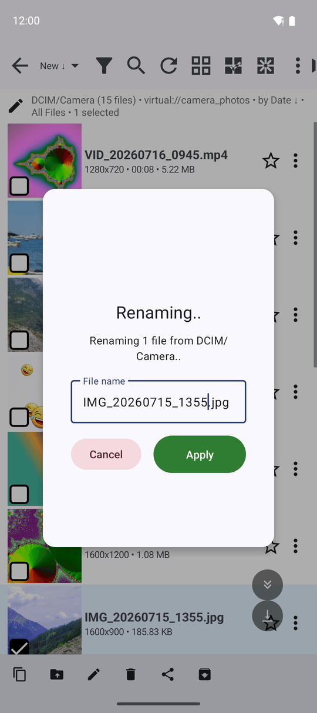
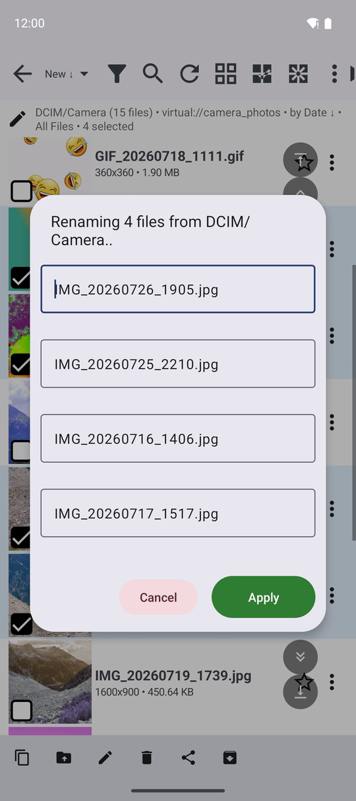

Переименование файлов и папок
Переименовывайте одиночные файлы, папки или группы файлов в файловом браузере или прямо во время просмотра в плеере — на телефоне, в сетевых ресурсах и облаке — с возможностью мгновенной отмены действия через кнопку «Отменить».
Почему вам это понравится
Служебные имена файлов вроде IMG_20260712_183412.jpg ни о чём не говорят спустя год. А название «Первая поездка Ани на велосипеде.jpg» говорит сразу обо всём. Понятное имя позволяет мгновенно найти нужный кадр через поиск и легко узнать его в любой галерее.
FastMediaSorter позволяет переименовывать файлы прямо в процессе просмотра: одиночный снимок в плеере или целую группу файлов в файловом браузере, задавая каждому индивидуальное имя. Функция работает на встроенной памяти телефона, на карте памяти, в сетевых папках и в облачных хранилищах.
- ✓ FastMediaSorter в любой редакции: Standard, noLegal, Lite, Photos, Legacy, VR или FOSS.
- ✓ Доступ к ресурсу с правом на запись. В папках «только для чтения» кнопка переименования скрыта.
Переименование одного файла
В файловом браузере отметьте файл флажком и нажмите кнопку Переименовать на нижней панели. В окне Переименование.. отобразится текущее имя, причём часть до точки уже выделена — просто наберите новое имя, а расширение .jpg останется на месте. Нажмите Применить.
Если поле оставлено пустым, появится предупреждение: «Имя файла не может быть пустым». Если файл с таким именем уже существует, приложение сообщит: «Файл уже существует: ..», предложив указать другое имя.

Переименование нескольких файлов одновременно
Отметьте несколько файлов и нажмите кнопку Переименовать. В открывшемся окне отобразится список всех выбранных файлов с отдельным полем ввода для каждого. Пройдитесь по списку и введите желаемые имена — некоторые можно оставить без изменений. Нажмите Применить, и все файлы будут переименованы в один приём.
Если одно из новых имён уже занято, этот конкретный файл сохранит прежнее имя с предупреждением в итоговом отчёте, а все остальные успешно переименуются.

Переименование папки
Папки переименовываются точно так же: отметьте папку чекбоксом и нажмите Переименовать на панели или выберите пункт Переименовать в собственном меню с тремя точками этой папки. Всё вложенное содержимое остаётся нетронутым.
Переименование прямо во время просмотра
В плеере или просмотрщике фото нажмите кнопку Переименовать на панели команд. Откроется то же самое окно Переименование.. для просматриваемого сейчас кадра. Это самый быстрый способ давать осмысленные имена фотоснимкам во время их последовательного разбора. При наличии клавиатуры можно использовать горячую клавишу, а также настроить зону касания на экране.
Отмена переименования
Сразу после переименования в файловом браузере нажмите кнопку Отменить во всплывающем сообщении внизу или на панели операций — файлу вернётся его прежнее имя. Другие приложения (например, системная галерея) моментально узнают о новом имени, так как FastMediaSorter сразу уведомляет медиахранилище Android.
Что вы получите
Праздничные кадры получили понятные имена «День рождения Ани 01.jpg» — «День рождения Ани 12.jpg», сканы документов легко различимы, а любой файл можно найти за секунду по ключевому слову через поиск.
Советы и решение проблем
- Не удаляйте расширение. Замена
.jpgна что-то другое не конвертирует файл, а лишь собьёт с толку другие программы. Приложение автоматически выделяет только само имя файла, предотвращая случайное удаление расширения. - Имена в сетевых папках подчиняются правилам целевой операционной системы — например, Windows запрещает символы вроде
?или:в именах файлов. - Хотите задать строгий порядок? Начните имена с цифр (например,
01 Приезд.jpg,02 Пляж.jpg) и включите сортировку папки по имени (см. Сортировка, фильтрация и быстрый поиск).